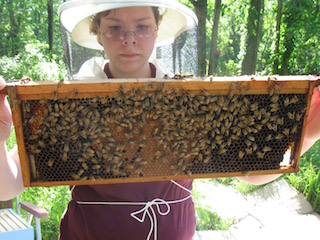

Backyard Beekeeping for Fun and Profit

One day, I finished reading The Secret Life of Bees and I decided to be a beekeeper. While there is a lot of learning involved, you too can learn this fun and educational (not to mention delicious!) hobby. All you need is some money, a little time, and a lack of fear about new experiences that might be somewhat painful.
Necessary Gear
- Bees
- Somewhere to put them
- Flowers, within a 4 mile radius, preferably organic
- Bee suit, or highly puncture resistant skin
- A smoker, preferably the device but a chain smoker might work fine, too
Inspecting a Hive
- Put on protective gear (unless you are Luke Cage).
- Light fire in smoker. Do not light self, house, pets, or car on fire.
- Gently smoke bee hive. Or have your chain smoker smoke a few while standing next to it.
- Open hive. Retreat if bees seem unusually pissed. Unfortunately, you will have to get stung a few times to figure out what is usual and what is not.
- Go through the frames of the hive, looking for solid brood pattern, sufficient stores of pollen and honey, and any signs of pests or disease.
- Look for the Queen. The bee breeder will often put a colored dot on her back to make her easier to spot.
- If everything looks good, close up the hive, put out your smoker, and take off bee suit after checking for bees on it.
- If all does not look well, follow above steps with gloomy resolution and head straight for the appropriate internet forums.